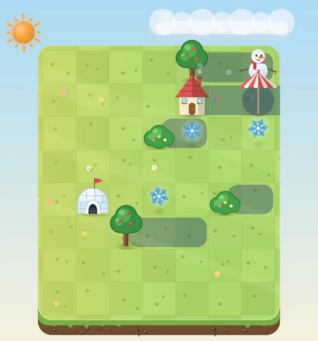
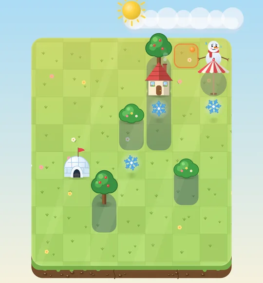
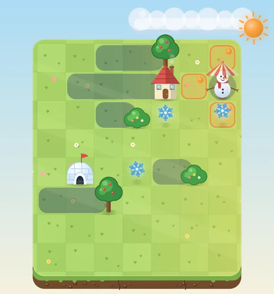
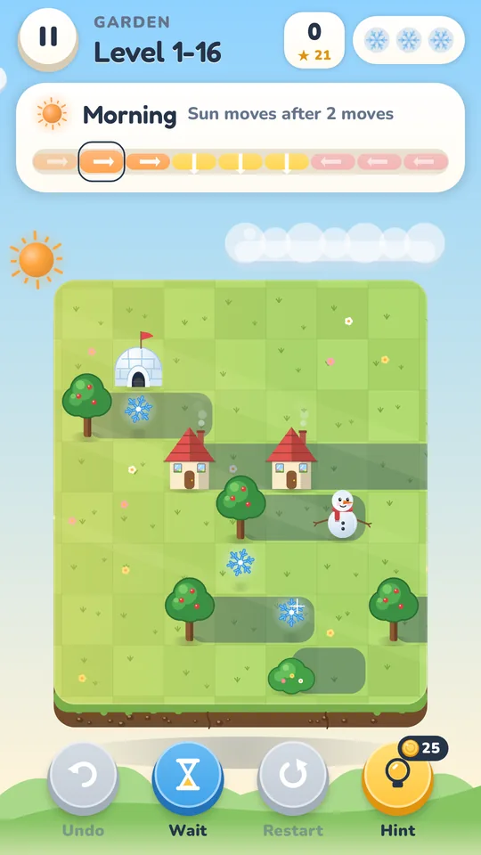
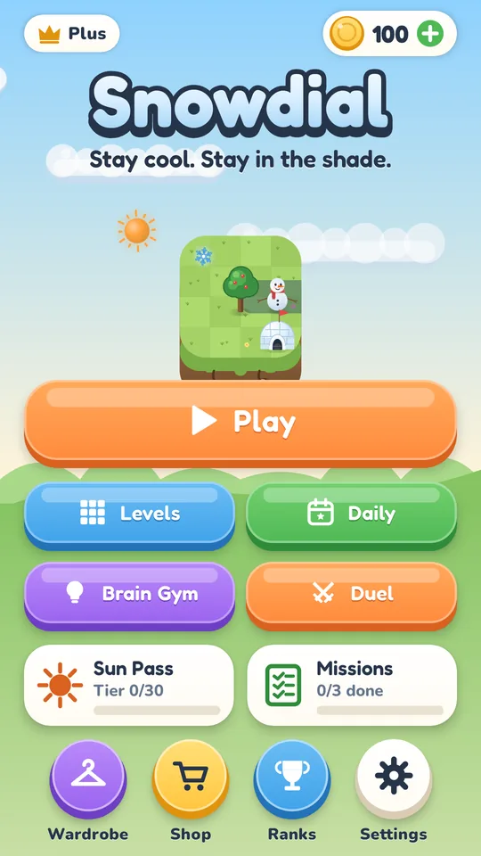
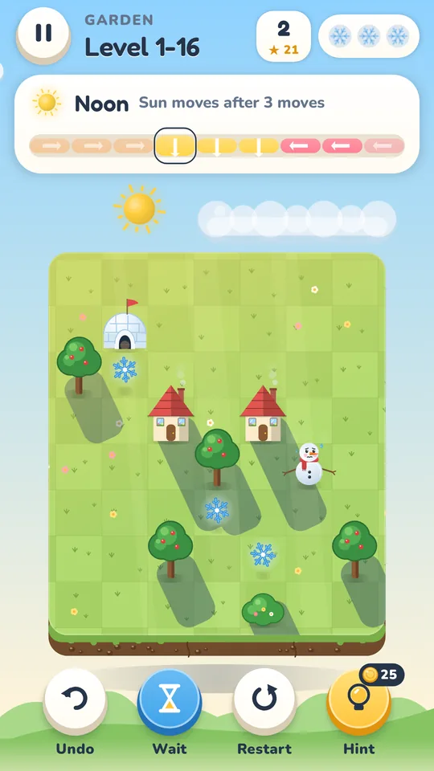
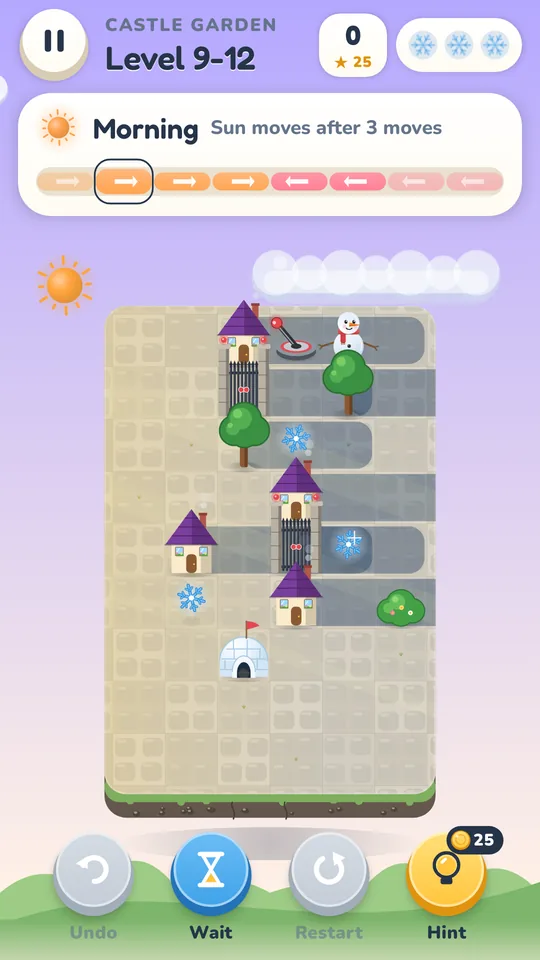
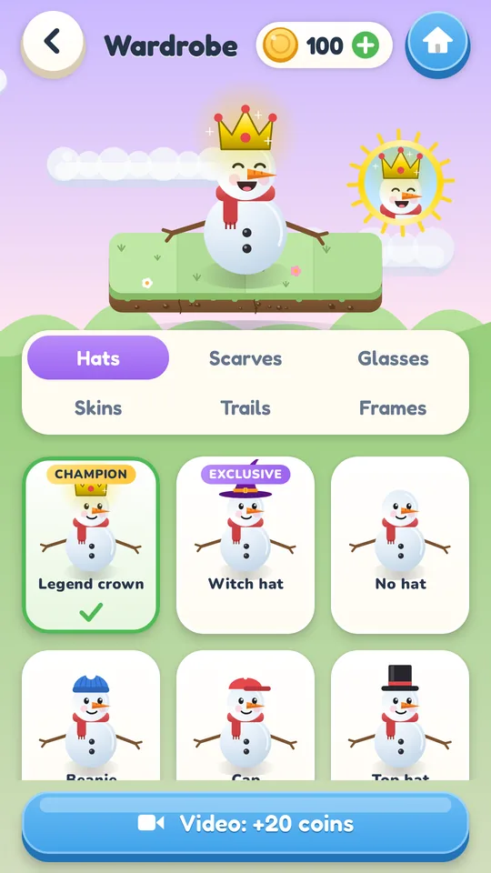

Stay cool. Stay in the shade.
A snowman in summer? That takes brains. Snowdi wants to get back to his igloo, but he may only stand in the shade. And the shade moves with every step.
Snowdial is in testing right now. Want to play early? Write to snowdial@denkarena.com.
How it works
The sun travels across the island. Every move changes the shadows, so you have to think ahead.

The sun is on the left, shadows fall to the right.

The sun stands high. Shadows are only half as long.

The sun is on the right, shadows fall to the left.
At night there is shade everywhere. Taller things cast longer shadows: bush 1 tile, tree 2, house 3. The shortest solution earns the third star.

Try it now
The first six levels run right here in your browser. No sign-up, no download.
- Swipe or use the arrow keys to walk
- The sun bar shows when the sun moves on
- Undo as often as you like
Every world brings new ideas
Crates
Push crates to build your own shade.
Ice
On ice you slide until something stops you.
Portals
Jump through portals to the other side of the island.
Wind
The wind carries you a little further, whether you like it or not.
Switches
Step on the lever and the gates open. Closed, they cast shade.
Pino
Pino the penguin follows you and protects you with his little shadow.
Something to do every day
Daily puzzle
A new puzzle every day. Your streak grows, and a streak freeze saves it if you miss a day.
Brain Gym
Rated puzzles without undo. Your rating rises like in chess, from “Snowball” to “Ice Legend”.
Missions and Sun Pass
Three tasks a day and a new season every month with outfits, trails and frames.
Shadow Duel
Solve three puzzles against the clock and beat the practice bot. Online duels with friends follow in an update.
What Snowdial looks like




Fair and relaxed
All levels free
You can play all 360 puzzles without buying anything.
Undo as often as you like
A mistake is no drama. Take moves back or get a fair hint.
Guaranteed solvable
Every level was verified by a computer solver.
Easy to learn
In the first level a hand shows you every step. You hardly need to read.
Frequently asked questions
What does Snowdial cost?
Snowdial is free and shows ads. With "Remove ads" or the optional Snowdial Plus subscription you play without ads. Cancel the subscription any time in Google Play.
Do I need internet?
No. All levels, the daily puzzle and Brain Gym also work offline.
Is there an iPhone version?
Snowdial comes to Android first. An iPhone version is planned. The demo above already runs in the browser on any phone.
Do I need an account?
No. Your progress stays on your phone.
Who is Snowdial for?
For everyone who loves a puzzle. The first worlds are easy, later it gets really tricky.